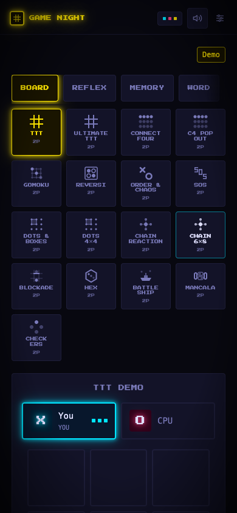
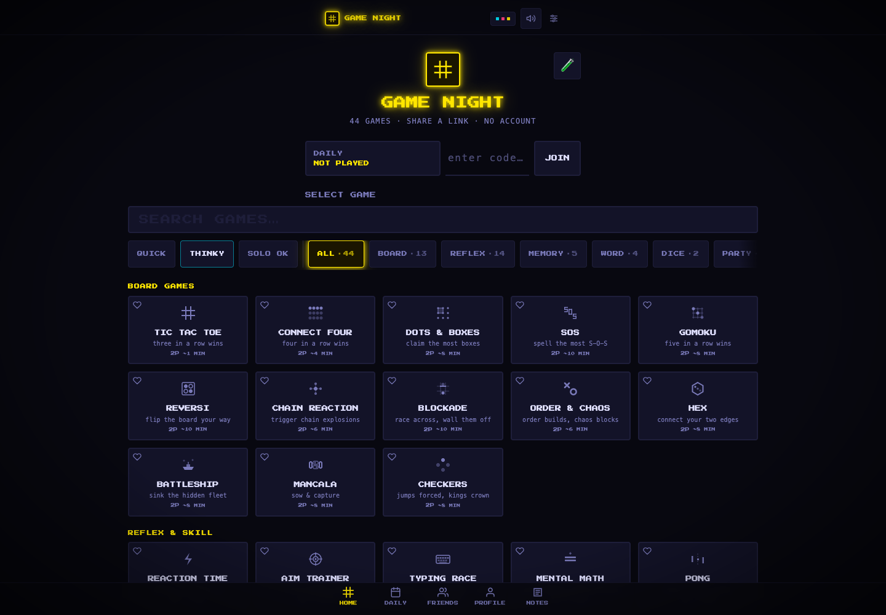
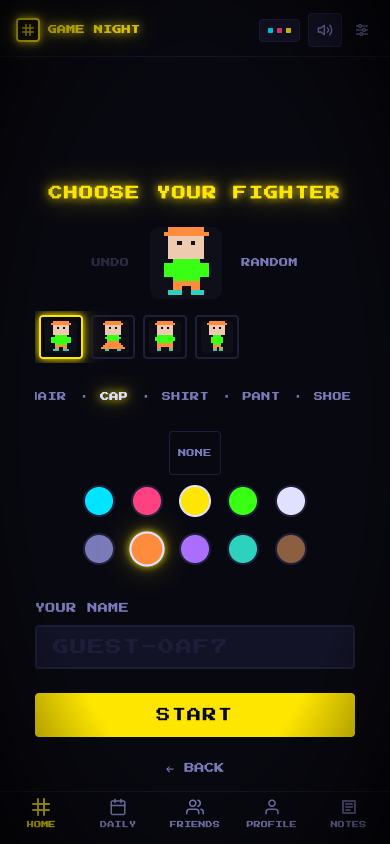

Keep the personality
The midnight palette, pixel icons, and restrained neon accents make this feel like an arcade, not a generic dashboard.
Game Night has a distinctive personality and a generous game library. The next improvement should be a faster path to the first move, not another feature.
The midnight palette, pixel icons, and restrained neon accents make this feel like an arcade, not a generic dashboard.
The existing options sheet makes online, AI, and same-device play explicit. A card tap does not silently create a room.
Search, favorites, resumable rooms, sticky filters, and persistent navigation already exist. Refine them rather than adding parallel systems.
The left side is the running app. The right side is an illustrative proposal, not shipped UI. Switch between three moments in the journey.

The choice is made, but the catalog remains.
The solo route shows category tabs and 17 board-game tiles before the active game. “Demo” also makes a playable mode sound provisional.
A compact picker opens on request. The board stays the default view.
Get three in a row to win.
Take turns placing X and O. Complete a row, column, or diagonal before the computer does.
Concept only · the board does not play.
44 games. No account required.
Play against the computer. No waiting.
Three in a row.
~1 min · Solo
Four in a row.
~4 min · Solo
Preview controls do not create rooms.
Play a quick solo round or send a room link to a friend.
Easy to learn.
Hard to put down.
A little break.
A little competition.
Free to play. No account required.
Choose your name and avatar later.
Guest identity is generated automatically.
Respect the completed choice.
Show the board and turn instruction first. Move the catalog behind “Change game.” Keep /demo as a browsing hub.
These are real app captures, not reconstructed screens. Open an image for its native resolution.



Capture conditions: localhost:5173, isolated local guest, default midnight theme, reduced motion. Firebase traffic was blocked to avoid creating profiles, rooms, or presence records. Screens show real components, but not live multiplayer or authenticated social behavior.
Priorities reflect observed friction and code evidence, not measured conversion loss. P1 is the first pass; P2 is the next product iteration.
/solo/tictactoe still renders the full DemoHub selector above the board. Split the explicit solo-play layout from the browsing hub; reuse the existing game components.
src/pages/Demo.jsx:2350–2428Opening the sheet leaves focus on the catalog card. Pressing Tab moves to its background favorite button, not into the dialog. Add initial focus, a focus trap, background inertness, and focus restoration through the shared sheet.
src/components/BottomSheet.jsx:30–103Mobile card metadata renders at 6–7 px; descriptions disappear below sm. Keep pixel titles and scores, but use 12–14 px mono for metadata and at least 14 px for important instructions. Add visible, programmatic labels for search and room code.
src/components/GameCard.jsx:43–49src/components/GamePicker.jsx:178–192src/pages/Home.jsx:210–230The first-visit gate is welcome, then avatar/name setup, then the catalog. Offer one-click guest entry with generated defaults; put customization in Profile and keep Google sign-in secondary. Replace “INSERT COIN TO PLAY” with a clear free-play promise.
src/pages/Home.jsx:129–135src/components/Onboarding.jsx:15–18, 99–170At 390 px, Quick / Thinky / Solo OK consume the chip row before the categories. Separate play mode from game category. Start with clearer sheet labels: “Create a room,” “Play solo,” and “Same device.” Keep “VS AI” only when there is actually an AI opponent.
src/components/GamePicker.jsx:18–22, 211–236src/components/GameOptionsSheet.jsx:58–77Home repeats its logo, places Daily beside a cramped code input, and puts Recently Played below the entire catalog. Keep Continue Playing where it is; move recents above discovery. Make room joining a labeled action. Put Emoji Lab and Notes behind a secondary destination unless usage proves they deserve prime space.
src/pages/Home.jsx:146–181, 201–236, 273–287src/components/BottomTabBar.jsx:66–79Your feedback: “lets go with this.” The direction is selected. The scope below is ready for implementation approval; application code is still unchanged.
No game rules, Firebase schema, theme palette, or new routing infrastructure. Keep the existing catalog for /demo.
The mode-first concept adds state and changes catalog behavior. Do not ship it solely because the mockup looks cleaner.
Explicitly out of scope: new home layout, mode-first browsing, onboarding changes, recents reordering, Notes/Emoji Lab navigation changes, lobby layout, game rules, Firebase writes/schema, and theme replacement.
Proof before completion: run unit tests, lint, and production build; compare screenshots at 360 / 390 / 768 / 1440 px; verify the full Tic Tac Toe board at 390 × 844, keyboard focus containment/restoration, 200% zoom, all theme contrasts, and hardware-back behavior where a real device is available. Clearly label any device checks that remain manual.
Stop when: the three selected improvements pass their acceptance checks and existing /demo, /local, search, and room-creation behavior is preserved. Do not expand into Pass 2.
Suggested usability tasks: ask a new visitor to play one solo move, create a room for a friend, and find a game for the same device. Ask a returning visitor to resume a room. Observe hesitation, wrong turns, and time to the first move; establish a baseline before claiming improvements.
Regression checks: 360 / 390 / 768 / 1440 px, keyboard-only navigation, 200% zoom, reduced motion, all themes, cold guest entry, returning identity, and back navigation. Test multiplayer in separate browser profiles or devices.
Trade-offs: larger type means fewer visible cards. Deferring customization may reduce early avatar engagement. Mode-first browsing can hide games unless there is a clear “All games” reset. Keep both the full catalog and user identity intact.
Source-only follow-up: the waiting room puts a 150 px QR code before Share/Copy and the room code. Consider mobile share-first and desktop QR-first layouts, but capture a real two-player lobby before prioritizing this change. src/components/WaitingRoom.jsx:254–311.
Not verified: live room creation/joining, reconnects, invites, authenticated Friends/Profile, end-of-round UX, screen-reader output, or gameplay across the whole catalog. This is a focused browser-and-source review, not a full accessibility or performance audit.
No application edits. Plan stays in docs/README-UX-REVIEW.md and this Lavish companion. Say implement later when ready.